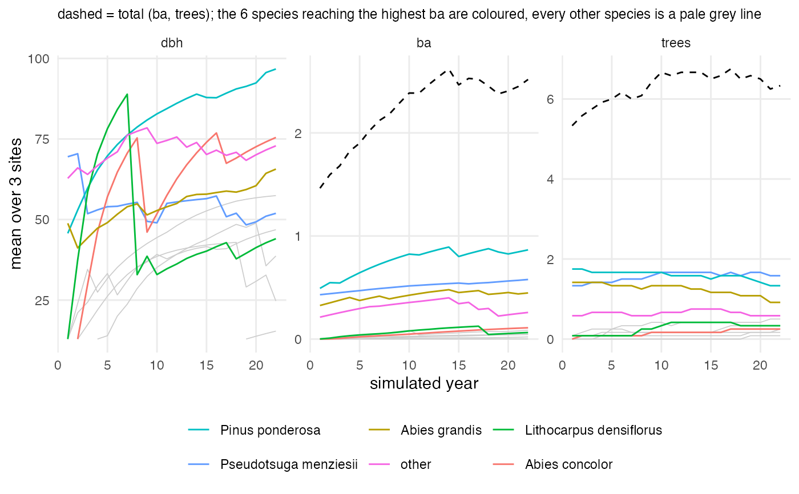
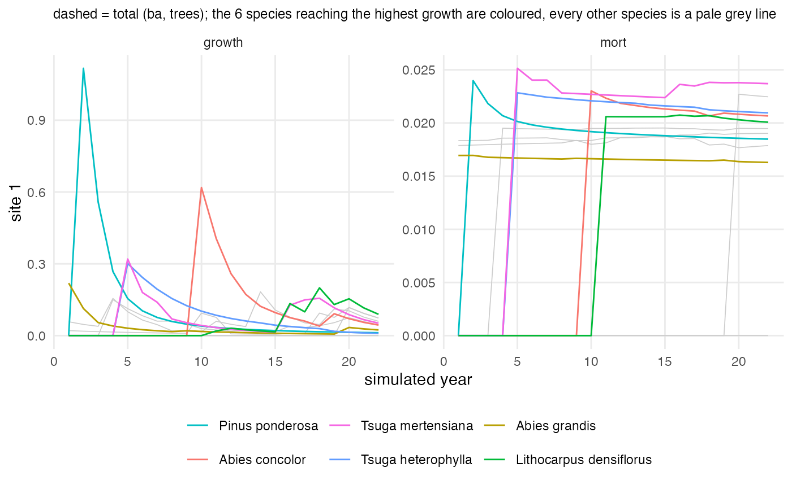
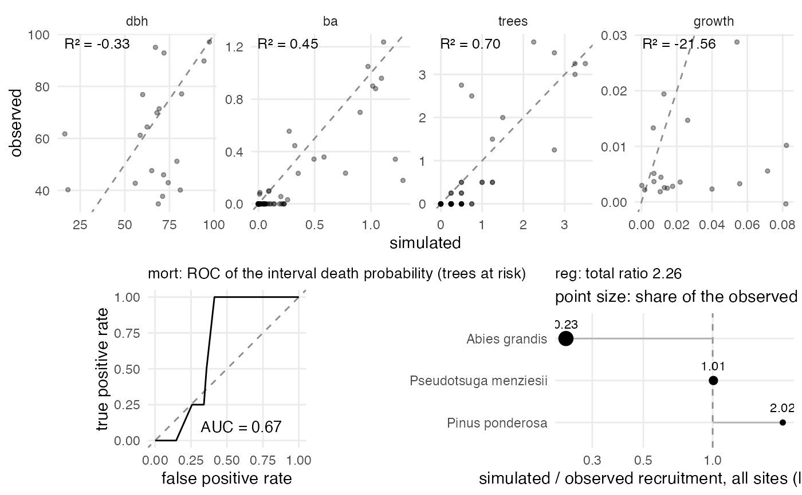

Draws the trajectories returned by simulateForest() or
predict(): one
panel per response, one line per species, averaged over the sites (dbh over
the sites where the species has trees); with sites one site (or the
average over a few). To see every site, loop over them. The n_species
leading species are coloured and named, every other species is a pale grey
line, and the stand total of ba and trees is dashed.
Arguments
- x
The object returned by
simulateForest()orpredict()(classfinn_simulation).- y
NULL(default), or observations to compare with (theobsofcomparePlot()).- response
Responses to draw, any of
"dbh","ba","trees","growth","mort","reg","r_mean_ha";NULL(default) the stand variablesba,dbhandtrees. Withy, as incomparePlot().- sites
Site ids to include;
NULL(default) all.- ...
plot(): passed tocomparePlot()whenyis given (type,species), otherwise unused.print(): passed to the print method of a list.- n_species
Number of species drawn in colour: those reaching the highest value of the first response; every other species is a pale grey line. Default
6. Withy, then_speciesofcomparePlot()(its default when not given).- species_names
Species names for the legend (see
plot.finn_class());NULL(default): the names the simulation carries from the model.
Details
A bare-ground run (simulateForest(bare_ground = TRUE)) is drawn as a
succession: basal area by default, one panel per site, labelled with the
site's mean climate.
Given observations as the second argument, plot(sim, obs) compares the
simulation with them instead: it is comparePlot(), with the same arguments.
print() of a simulation shows the list of tables as before 0.2.0, without
the class attribute.
See also
plot.finn_class() for the fitted parameters, comparePlot() and
evaluate() for the comparison with observations.
Examples
library(data.table)
sites <- 1:3
Nsp <- max(fia_obs_dt$species)
init <- makeInitCohorts(fia_init_trees[siteID %in% sites], Nspecies = Nsp)
FINN.seed(1)
m <- finn(N_species = Nsp, recruits_dbh = 12.9,
growth_process = createProcess(~ temp + prec, growth),
mortality_process = createProcess(~ temp + prec, mortality),
regeneration_process = createProcess(~ temp + prec, regeneration_capped))
fit(m, data = fia_obs_dt[siteID %in% sites], env = fia_env_dt[siteID %in% sites],
init_cohort = init, epochs = 2L, patches = 4, patch_size = 0.06,
plot_progress = FALSE)
#> ℹ weights: intercept-only baseline x your vector (dbh=0.00243, ba=12, trees=0.968, growth=1.84e+04, mortality=38.5, regeneration=0.768)
#> ℹ share of the objective at the intercept-only baseline (scaled): dbh=17%, ba=17%, trees=17%, growth=17%, mortality=17%, regeneration=17%
sim <- simulateForest(m, env = fia_env_dt[siteID %in% sites], init_cohort = init)
plot(sim)

plot(sim, response = c("growth", "mort"), sites = 1)

# against the observations
plot(sim, fia_obs_dt[siteID %in% sites])
